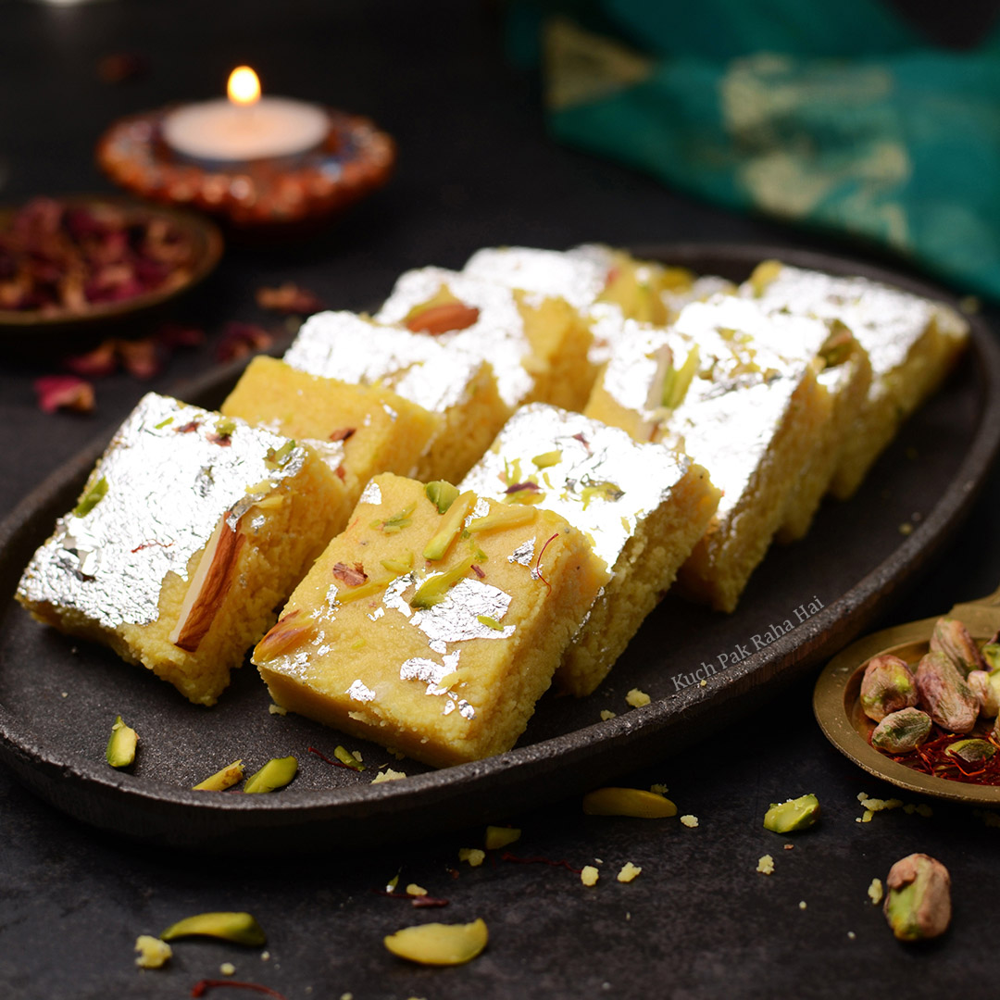

Gulab Jamun

Gulab Jamun consists of soft, deep-fried dumplings made from a mixture of milk solids, typically khoya or paneer.These golden brown balls are soaked in a sugar syrup infused with cardamom and rose essence, giving them a sweet and fragrant taste.
Jalebi
Jalebi is made by fermenting a wheat flour batter, which is then deep-fried into spiral or pretzel shapes.These fried spirals are soaked in saffron-infused sugar syrup, resulting in a sweet and tangy flavor with a crispy texture.
Rasgulla

Rasgulla is a Bengali sweet made from chhena (cottage cheese) balls, which are boiled in sugar syrup.These spongy, white balls absorb the sugar syrup, creating a light and sweet delicacy.
Barfi

Barfi is a dense and sweet confection made from condensed milk and sugar, cooked until it solidifies.It often includes flavors like cardamom, pistachio, or coconut and is cut into square or diamond shapes.
Ladoo
Ladoo is a spherical sweet made from various ingredients like gram flour (Besan Ladoo), semolina (Suji Ladoo), or coconut.They are often flavored with cardamom and garnished with nuts, making them a popular choice during festivals.
Halwa

Halwa is a sweet dish made from ingredients like semolina (Suji Halwa), carrots (Gajar Halwa), or lentils (Moong Dal Halwa).
It is cooked in ghee and sugar, with the addition of nuts, resulting in a rich and aromatic dessert.
Kheer
Kheer is a creamy rice pudding made by simmering rice in milk and sweetening it with sugar.
Flavored with cardamom and garnished with nuts, kheer is a popular dessert served during festive occasions.
Modak
Modak is a sweet dumpling associated with the Hindu festival of Ganesh Chaturthi.
The outer layer is made from rice flour or wheat flour, and the inner filling usually contains coconut, jaggery, and nuts.
Sandesh

Sandesh is a Bengali sweet made from fresh paneer (chhena), sweetened with sugar or jaggery.It is often flavored with cardamom or saffron and molded into various shapes.
Mysore Pak
Mysore Pak is a South Indian sweet made from gram flour, ghee, and sugar.
It has a unique, crumbly texture and is often garnished with chopped nuts, offering a rich and sweet experience.
 Sweet Foods
Sweet Foods